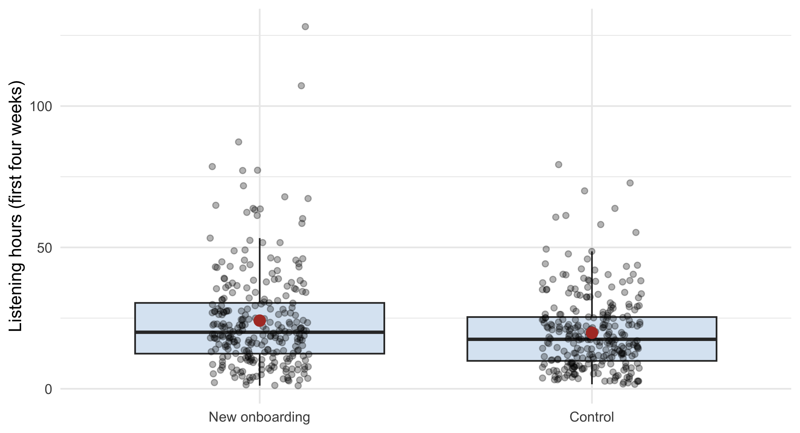
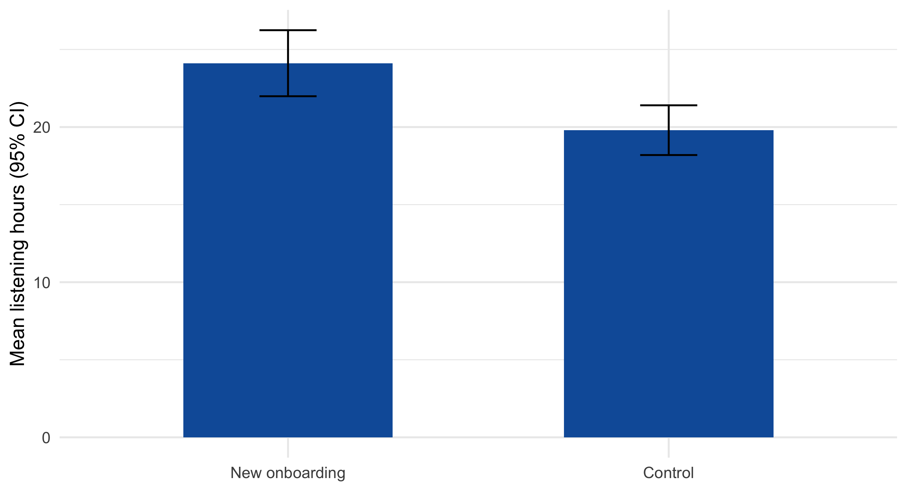

library(tidyverse)
library(psych)
# Personal version of the data, based on the student ID
student_id <- "12345678"
set.seed(as.numeric(gsub("\\D", "", student_id)))
n_ab <- sample(150:300, 1)
lift_h <- runif(1, 0, 0.25)
base_p <- runif(1, 0.04, 0.08)
lift_p <- runif(1, 0, 0.5)
onboarding <- tibble(
user_id = 1:(2 * n_ab),
group = factor(rep(c("Control", "New onboarding"), each = n_ab),
levels = c("New onboarding", "Control")),
hours = round(c(rgamma(n_ab, 2, scale = 10), rgamma(n_ab, 2, scale = 10 * (1 + lift_h))), 1),
upgraded = c(rbinom(n_ab, 1, base_p), rbinom(n_ab, 1, base_p * (1 + lift_p)))
)
n_push <- sample(100:180, 1)
eff <- runif(2, 0, 2)
push_test <- tibble(
version = factor(rep(c("No push", "Weekly push", "Daily push"), each = n_push),
levels = c("No push", "Weekly push", "Daily push")),
sessions = rpois(3 * n_push, rep(c(8, 8 + eff[1], 8 + eff[2]), each = n_push))
)Assignment 2: Analyzing experiments
This page shows the tasks of Assignment 2 with one possible solution and the grading hints we used. Click on a blue box to expand it.
The solution was computed for the example student ID 12345678. Since every student worked with a personal version of the experiment data, your numbers differ from the ones shown here — some results are significant in one data version and not in another. What matters is the approach, the code, and a correct interpretation of your result. Other correct solutions (e.g., base R instead of the tidyverse, other chart types, Tukey’s HSD instead of Bonferroni) received full points.
Points: 7 for the report, 3 for the in-class debrief (10 in total). Unless stated otherwise, half of the points of a sub-task were given if the approach was right but the execution contained an error, and no points if the task was missing or the approach was wrong.
| Task | Topic | Points |
|---|---|---|
| 1 | Describing the experiment | 1.0 |
| 2 | The difference between two means | 2.0 |
| 3 | How large is the effect? | 1.0 |
| 4 | The difference between two shares | 1.0 |
| 5 | Power and sample size | 1.0 |
| 6 | Three versions (ANOVA) | 1.0 |
| Report | 7 | |
| — | In-class debrief (3 questions) | 3 |
| Total | 10 |
The situation
The product team of a music streaming service tested a new onboarding flow: new users were randomly assigned either to the new flow or to the old one (control). The data set onboarding contains, for each user, the experimental condition (group), the listening hours in the first four weeks (hours), and whether the user upgraded to Premium within 30 days (upgraded, 1/0). In a second, independent experiment, three push-notification strategies were tested on other users (push_test: version = “No push”, “Weekly push”, or “Daily push”; sessions = app sessions in the following week).
Setup: the personal data
Example data for student ID 12345678: 274 users per group in the onboarding experiment (548 in total); 152 users per version in the push experiment (456 in total).
Task 1: Describing the experiment (1 point)
1a) (0.5 points) For each group of the onboarding experiment, compute the number of users and the mean, median, and standard deviation of hours.
NoteSolution and grading: 1a
onboarding |>
group_by(group) |>
summarise(n = n(), mean = mean(hours), median = median(hours), sd = sd(hours))# A tibble: 2 × 5
group n mean median sd
<fct> <int> <dbl> <dbl> <dbl>
1 New onboarding 274 24.1 20 17.9
2 Control 274 19.8 17.5 13.5Grading: 0.5 for all four statistics per group; 0.25 if one or two were missing.
1b) (0.5 points) Create two charts that compare the two groups: (i) a boxplot with the individual users overlaid as jittered points (and the group means marked), to inspect the data behind the comparison; (ii) a bar chart of the group means with their 95% confidence intervals — the chart that goes with the test in Task 2.
NoteSolution and grading: 1b
# (i) Inspect the data: boxplot with the individual users and the group means
ggplot(onboarding, aes(x = group, y = hours)) +
geom_boxplot(fill = "#dbe7f3", outlier.shape = NA) +
geom_jitter(width = 0.15, height = 0, alpha = 0.3) +
stat_summary(fun = mean, geom = "point", color = "#b03a2e", size = 3) +
labs(x = NULL, y = "Listening hours (first four weeks)") +
theme_minimal()
# (ii) The chart that goes with the test: group means with 95% confidence intervals
onboarding_summary <- onboarding |>
group_by(group) |>
summarise(n = n(), mean = mean(hours), se = sd(hours) / sqrt(n)) |>
mutate(lower = mean - qt(0.975, n - 1) * se, upper = mean + qt(0.975, n - 1) * se)
ggplot(onboarding_summary, aes(x = group, y = mean)) +
geom_col(width = 0.55, fill = "#0f5da8") +
geom_errorbar(aes(ymin = lower, ymax = upper), width = 0.15) +
labs(x = NULL, y = "Mean listening hours (95% CI)") +
theme_minimal()
The listening hours are right-skewed with a few heavy listeners in both groups (the means lie above the medians); the two distributions overlap strongly, and the difference between the groups is a matter of the means and their uncertainty — which is what chart (ii) shows.
Grading: 0.25 for each chart with labeled axes. (i) needed both the boxplots and the individual points (a boxplot alone, or jittered points alone: 0.1); (ii) needed the means and their confidence intervals (bars without intervals: 0.1). A histogram or density plot per group instead of (i) was accepted for 0.15.
Task 2: The difference between two means (2 points)
2a) (0.5 points) Test whether the new onboarding flow changed the average listening time.
NoteSolution and grading: 2a
tt <- t.test(hours ~ group, data = onboarding)
tt
Welch Two Sample t-test
data: hours by group
t = 3.2, df = 507, p-value = 0.002
alternative hypothesis: true difference in means between group New onboarding and group Control is not equal to 0
95 percent confidence interval:
1.657 6.976
sample estimates:
mean in group New onboarding mean in group Control
24.11 19.80 Grading: 0.5 for a two-sample t-test (Welch or with equal variances). A paired test: 0 — the two groups consist of different users (between-subjects design, Chapter 4).
2b) (1 point) Interpret the result: What is the estimated difference between the groups? What does the 95% confidence interval tell you? Is the difference statistically significant at the 5% level — and what exactly does the p-value mean here?
NoteSolution and grading: 2b
Example answer (for the example data): Users with the new onboarding flow listened on average 4.32 hours more than users in the control group. The 95% confidence interval of the difference ranges from 1.66 to 6.98 hours: these are the effects that are compatible with the data. The interval does not contain zero, and the difference is statistically significant at the 5% level (p = 0.002). The p-value means: if the new onboarding flow had no effect at all, a difference at least as large as the observed one would occur in about 0.2% of experiments of this size.
Grading: estimated difference with its direction (0.25); correct interpretation of the confidence interval (0.25); correct significance decision (0.25); correct interpretation of the p-value as the probability of such data if there were no effect (0.25). Interpreting p as “the probability that H0 is true” or “the probability that the result is due to chance”: 0 for this part. For non-significant results, concluding that “the new flow has no effect”: −0.25.
2c) (0.5 points) Write a short report of the result for the head of product (effect, uncertainty, test — see Chapter 4, “Reporting the result”).
NoteSolution and grading: 2c
Example answer: Users with the new onboarding flow listened on average 24.1 hours in their first four weeks, compared with 19.8 hours in the control group (difference: 4.3 hours, 95% CI [1.7; 7]; Welch t-test: t(507) = 3.19, p = 0.002).
Grading: effect, confidence interval, and test statistic with p-value in a readable sentence: 0.5; one of the three elements missing: 0.25.
Task 3: How large is the effect? (1 point)
Compute Cohen’s d for the difference in listening time, and express the difference in percent of the control group’s mean. Is the effect small, medium, or large by Cohen’s conventions — and would you consider it relevant for the business? Explain.
NoteSolution and grading: Task 3
d_res <- cohen.d(onboarding$hours, onboarding$group)$cohen.d
d_res lower effect upper
[1,] -0.4411 -0.273 -0.1046control_mean <- mean(onboarding$hours[onboarding$group == "Control"])
100 * d_est / control_mean # relative difference in %[1] 21.8Example answer: Cohen’s d is about 0.27 — a small effect by Cohen’s conventions (0.2 small, 0.5 medium, 0.8 large). In relative terms, users with the new flow listened 21.8% more than the control group. Whether this is relevant depends on the business case — e.g., the value of an additional listening hour for retention and revenue, the cost of the new flow, and how long the effect lasts: a small standardized effect can still be economically meaningful for a service with many new users every month.
Grading: Cohen’s d computed with a function (or correctly by hand) (0.25); relative difference (0.25); classification by the conventions and a reasoned statement on business relevance (0.5). The sign of d depends on the order of the groups; no deduction if the size was interpreted correctly.
Task 5: Power and sample size (1 point)
5a) (0.5 points) Management considers the new onboarding flow worth rolling out if it increases the upgrade rate by at least 20% relative to the control group. Using the upgrade rate of your control group as the baseline, compute how many users per group a follow-up experiment would need to detect such an increase with 80% power (α = 5%). Compare the result with the size of your experiment.
NoteSolution and grading: 5a
p_control <- upg$rate[upg$group == "Control"]
pw <- power.prop.test(p1 = p_control, p2 = p_control * 1.2, power = 0.80, sig.level = 0.05)
pw
Two-sample comparison of proportions power calculation
n = 9381
p1 = 0.0438
p2 = 0.05255
sig.level = 0.05
power = 0.8
alternative = two.sided
NOTE: n is number in *each* groupExample answer: A follow-up experiment would need about 9,381 users per group — about 34 times as many as in the current experiment (274 per group). Differences between small shares need very large samples; the current experiment could only have detected much larger increases in the upgrade rate.
Grading: correct call with the student’s own control rate and a 20% relative increase (0.25); comparison with the size of the experiment (0.25). Using the observed treatment rate instead of +20%: 0.25 in total (this is post-hoc power, see Chapter 4).
5b) (0.5 points) With the number of users per group in your onboarding experiment, what is the smallest standardized effect (Cohen’s d) on listening time that could be detected with 80% power? What does this imply for your result in Task 2?
NoteSolution and grading: 5b
mde <- power.t.test(n = n_ab, sd = 1, power = 0.80, sig.level = 0.05)$delta
mde[1] 0.2398Example answer: With 274 users per group, only effects of about d = 0.24 or larger could be detected with 80% power. The observed effect is larger than this, so an effect of this size was reasonably likely to be detected.
Grading: correct call (0.25); sensible link to the result of Task 2/3 (0.25).
Task 6: Three versions (1 point)
Analyze the push-notification experiment: Do the three versions differ in the average number of sessions? If so, which versions differ from each other? Explain why you do not simply compare all pairs with separate t-tests.
NoteSolution and grading: Task 6
push_test |> group_by(version) |> summarise(n = n(), mean = mean(sessions))# A tibble: 3 × 3
version n mean
<fct> <int> <dbl>
1 No push 152 8.03
2 Weekly push 152 9.01
3 Daily push 152 9.12push_aov <- aov(sessions ~ version, data = push_test)
summary(push_aov) Df Sum Sq Mean Sq F value Pr(>F)
version 2 109 54.6 6.6 0.0015 **
Residuals 453 3748 8.3
---
Signif. codes: 0 '***' 0.001 '**' 0.01 '*' 0.05 '.' 0.1 ' ' 1pairwise.t.test(push_test$sessions, push_test$version, p.adjust.method = "bonferroni")
Pairwise comparisons using t tests with pooled SD
data: push_test$sessions and push_test$version
No push Weekly push
Weekly push 0.010 -
Daily push 0.003 1.000
P value adjustment method: bonferroni Example answer: The ANOVA shows that the versions differ (F = 6.6, p = 0.001). The Bonferroni-corrected pairwise comparisons show which pairs differ (corrected p-values below 0.05 in the table above). Separate t-tests for all three pairs would inflate the probability of at least one false alarm (the family-wise error rate) to about 1 − 0.95³ ≈ 14%; the ANOVA tests all groups at once, and the corrected post-hoc tests keep the family-wise error rate at 5%.
Grading: ANOVA (or Welch ANOVA / Kruskal–Wallis with justification) with correct interpretation (0.5); corrected pairwise comparisons — or the statement that they are not needed after a non-significant ANOVA — and the family-wise error argument (0.5). Uncorrected pairwise t-tests: 0.25 for the second part.
In-class debrief (3 points)
The debrief at the start of the session after the deadline (page 1 of the combined sheet with the Chapter 5, Part I quiz) consisted of three questions about each student’s own results:
- The onboarding experiment (1 point): (a) which group listened more on average? (b) Was the difference statistically significant at the 5% level? (c) Did the 95% confidence interval of the difference include zero?
- Effect size and relevance (1 point): what was Cohen’s d for the difference in listening time, and how would you classify it? Name one piece of information you would need in addition to decide whether the new onboarding is worth rolling out.
- The push-notification experiment (1 point): (a) which version had the highest average number of sessions? (b) Did the ANOVA indicate a difference between the versions? (c) After the Bonferroni correction, how many of the three pairwise comparisons were significant?
NoteExpected answers
All answers depend on the student’s personal data version; they were graded against the student’s own results (for the example ID: New onboarding listened more; the difference was significant; the interval excluded zero; d ≈ 0.27; the push version with the highest mean was Daily push, the ANOVA was significant, and 2 Bonferroni-corrected pair(s) were significant).
- Part (a): 0.4 points for the group with the higher mean; part (b): 0.3 for the correct significance verdict; part (c): 0.3 for the correct answer on the confidence interval. (b) and (c) must be consistent: “significant” means that the 95% interval excludes zero, and vice versa — a student who ticked “significant” and “includes zero” got the point for at most one of the two.
- 0.5 points for Cohen’s d (within about 0.05 of the reference value) with the correct category (below 0.2 negligible, 0.2–0.5 small, 0.5–0.8 medium, above 0.8 large). 0.5 points for one sensible piece of additional information: the cost of the new onboarding, the value of an additional listening hour (revenue, retention), the effect on upgrades or churn, the size of the effect in hours rather than in standard deviations, or how long the effect lasts. Not sufficient: “the p-value” or “a larger sample” — these concern significance, not relevance.
- Part (a): 0.4 points for the version with the highest mean; part (b): 0.3 for the correct ANOVA verdict; part (c): 0.3 for the correct number of significant Bonferroni-corrected pairs (a Holm or uncorrected count that matched the student’s own report: 0.15).